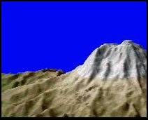

Today... partly sunny
Tonight... partly cloudy. Shower with snow level lowering to 4000
From September 10th - 12th, come to Sunrise for the annual autumn folk festival. The Sunrise Festival is quickly becoming one of the Northwest's top folk events, with its intimate performances from world-famous troubadours. Camping spots are still available at Sunrise campground, but they're going fast.
In addition to the intimate song sharing in the campground every evening during the festival, there'll be workshops, great food and craft vendors. Call Maria Thompson at 555-9011 for camping information. Call Ted Cashman (555-8122) to sign up for one of the workshops.
Want to see what it’s like to hover over Columbia Crest at 14,400 feet, or ski down the Ingraham Glacier without fear of falling? Then visit MRIM, the Mount Rainier Interactive Map now available at the Paradise visitors' center.
MRIM uses state-of-the-art computer animation combined with data from geological satellites to help you explore places you might never set foot on. The results of your journey are displayed on a large screen monitor – perfect for group presentations or individual explorations. Contact Doug LeCourt at Paradise for more information.